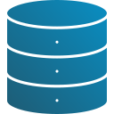
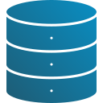

O monitoramento da umidade do solo é uma técnica que permite acompanhar em tempo real a quantidade de água presente no solo de uma plantação. Essa prática é essencial para agricultores, pois oferece informações precisas que ajudam a tomar decisões estratégicas sobre irrigação e manejo hídrico, otimizando o uso da água e promovendo o crescimento saudável das plantas.
No caso de plantações como o café, o monitoramento da umidade do solo é ainda mais importante, já que a irrigação inadequada pode impactar diretamente a qualidade dos grãos e a produtividade da lavoura.
Utilizamos tecnologias confiáveis e acessíveis para garantir precisão e eficiência:
 
